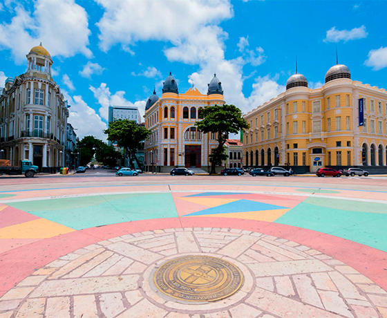

Praça Marco Zero - Recife
A cidade do Recife é uma das mais famosas do Nordeste, ela possui diversos
pontos turísticos e um deles é o Marco Zero.

A praça tem o nome original de Praça Barão do Rio Branco, todavia ficou conhecida como Praça do Marco Zero pelo fato de que nela encontra-se o quilometro zero das estradas de Pernambuco. É formada por um marco de cor vermelha doado pelo Clube do Automóvel. Na lateral da praça encontra-se a estatua do Barão do Rio Branco em bronze, com 2,80m de altura, do escultor Felix Charpentier. Já no centro pode ser vista a rosa dos ventos do pintor Cícero Dias. Nos períodos de momo a praça funciona como quartel general do carnaval multicultural do Recife.